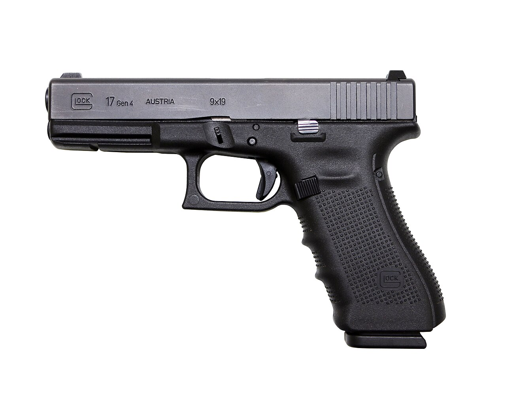
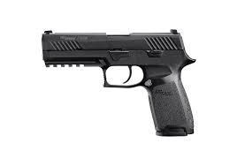
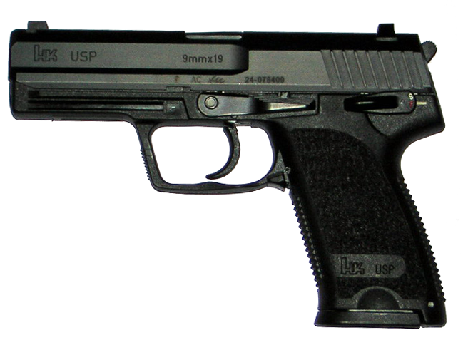
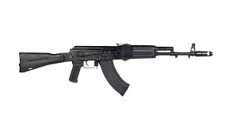
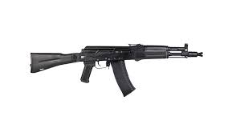
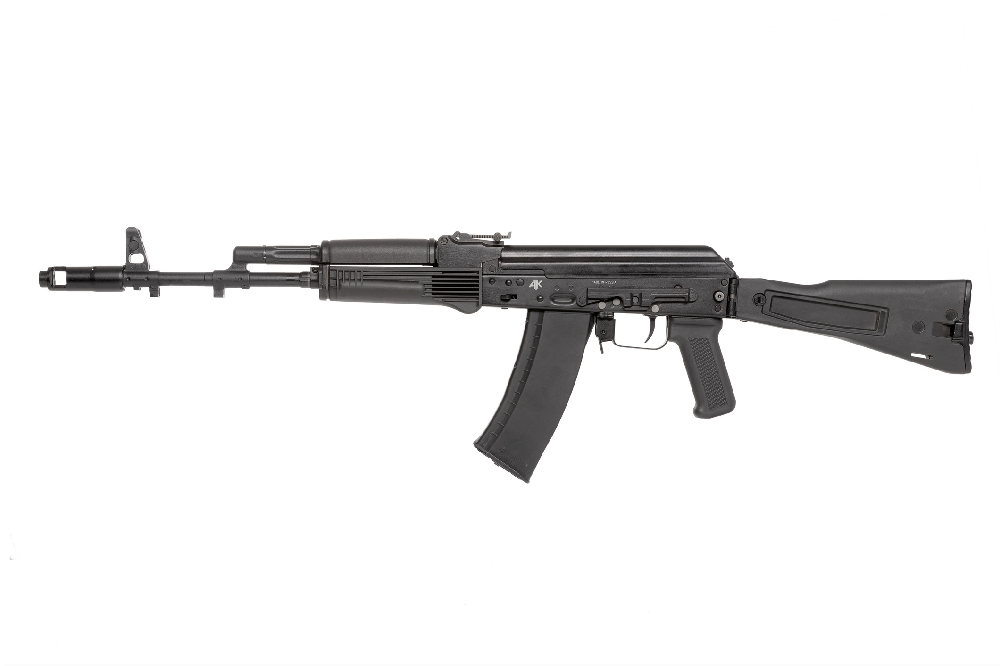
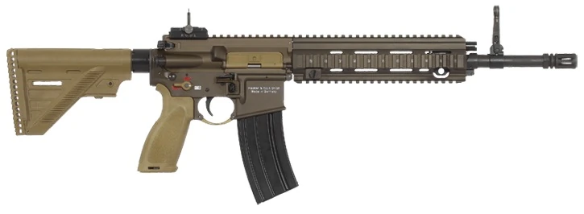
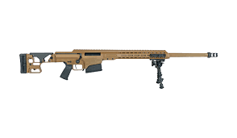
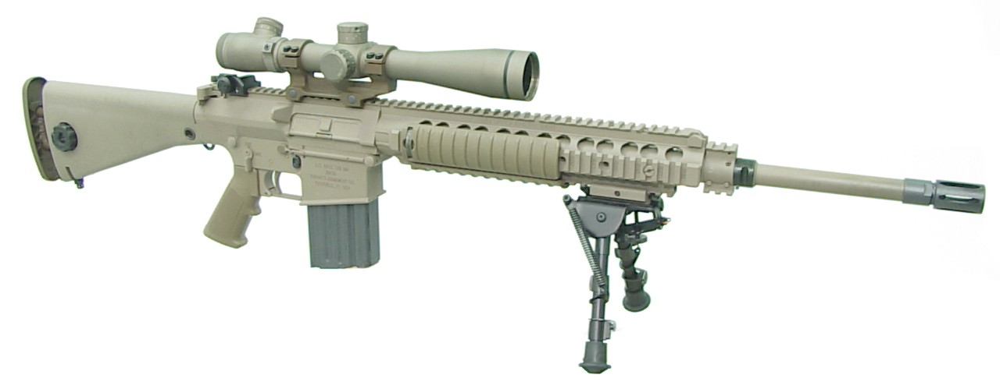
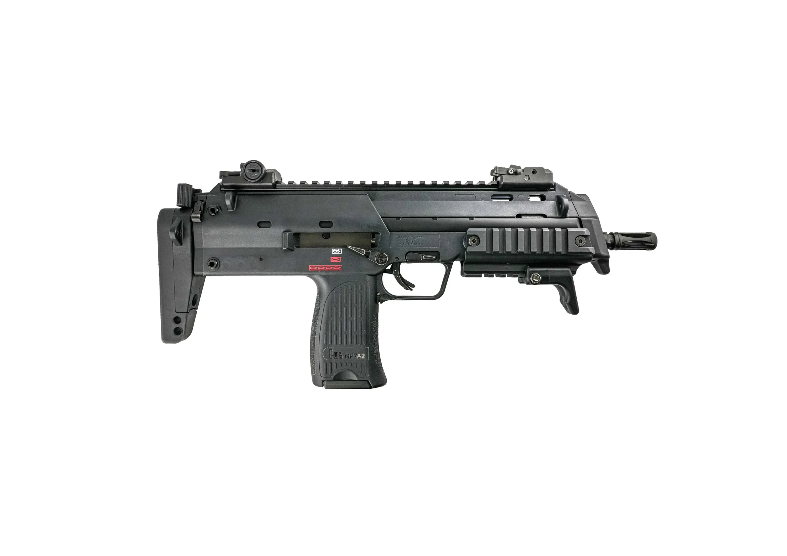

My Favorite Firearms
I always have an interest in firearms since I was young, playing with toy guns and such.
My interest only begin to kick off when I discovered a YouTube series called "Iconic Arms" by Ahoy, real name Stuart Brown and it has been a huge influence on my knowledge and appreciation for these weapons.
Here are some of my favorites weapons, sorted by category as of May 2026:
Table of Contents:
- (top)
- Pistol
- Assault Rifle / Carbine
- Sniper Rifle / Designated Marksman Rifle
- Submachine Gun / Personal Defense Weapon
Pistol
-
Glock 17

-
P320

-
USP45

Assault Rifle / Carbine
-
AK-103

-
AK-105

-
AK-74M

-
HK416A5

-
M4A1

Sniper Rifle / Designated Marksman Rifle
-
MRAD

-
M110

Submachine Gun / Personal Defense Weapon
-
MP7A2
